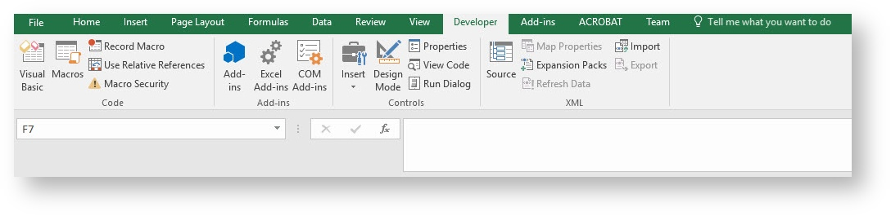
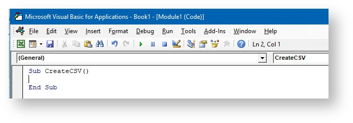
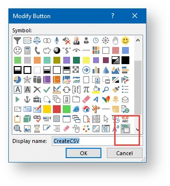

To import .csv files into
Microsoft Office allows you to run pre-recorded instructions on Excel data. To do so, you must write your code in a place and in a way that Office can understand; typically, by using the Visual Basic Editor. Although it is installed by default, many users do not know that it is even available until it is enabled on the ribbon.
All Office 2010 and later applications use the ribbon. One tab on the ribbon is the Developer tab, where you access the Visual Basic Editor and other developer tools. Because Office 2010 does not display the Developer tab by default, you must enable it using the following procedure:
To enable the Developer tab:
On the File tab, choose Options to open the Excel Options dialog box.
Click Customize Ribbon.
Under Choose commands from, select Popular Commands.
Under Customize the ribbon, select Main tabs.
Select the Developer option.
Click OK.
After Excel displays the Developer tab, note the location of the Visual Basic, Macros, and Macro Security.

To specify which macros can run and under what conditions, click Macro Security.
Although rogue macro code can seriously damage your computer, security conditions that prevent you from running helpful macros can seriously undermine your productivity. Macro security is a complex and involved topic that you should study and understand if you work with Excel macros.
For the purposes of this article, be aware that if the Security Warning: Macros have been disabled bar appears between the ribbon and the worksheet when you open a workbook that contains a macro, you can click the Enable Content button to enable the macros.
Also, as a security measure, you cannot save a macro in the default Excel file format (.xlsx); instead, you must save the macro in a file with a special extension, .xlsm.
The following procedure shows you how to create a new blank workbook in which to store your macros. You can then save the workbook in the .xlsm format.
To create a new blank workbook:
On the Developer tab, click Macros.
The Macro dialog box opens.
For Macro Name, type CreateCSV.
The Create function becomes available.
Click Create.
The Visual Basic Editor opens with the outlines of a new macro ready.
VBA is a full-featured programming language with a correspondingly full-featured programming environment. This article examines only those tools that you use to get started with programming, and that excludes most of the tools in the Visual Basic Editor. With this caveat, close the Properties window on the left side of the Visual Basic Editor, and ignore the two dropdown lists that appear above the code.

The Visual Basic Editor contains the following code:
VB
Sub CreateCSV()
End Sub
Sub stands for Subroutine, which you can define for now as macro. Running the CreateCSV macro runs any code that is between Sub CreateCSV () and End Sub.
Now edit the macro so that it looks similar to the following code. Feel free to copy and paste the code below – everything between Sub CreateCSV() and End Sub.
VB
Sub CreateCSV()
Dim lColumnCount As Long
Dim lRowCount As Long
Dim strFileName As String
MsgBox ("This Macro will create a CSV version of the SELECTED ROWS AND COLUMNS. It will surround the cell data with quotes and separate each cell with a comma. Finally, it will replace any chr(10)s with chr(13)s.")
strFileName = InputBox("Please enter the destination file path.", "", "C:\Temp\Imports\" & LCase(ActiveSheet.Name) & ".csv")
If (strFileName = "") Then
Exit Sub
End If
On Error Resume Next
Open strFileName For Output As #1
If Err.Number > 0 Then
MsgBox ("Error: The path you selected may be bad.")
Exit Sub
End If
lColumnCount = Selection.Columns.Count
lRowCount = Selection.Rows.Count
Dim sValue As String
For lRow = 1 To lRowCount
For lColumn = 1 To lColumnCount
sValue = Selection.Cells(lRow, lColumn).Value
If lColumn = lColumnCount Then
If sValue = "" Then
Write #1, ""
Else
Write #1, sValue
End If
Else
If sValue = "" Then
Write #1, "",
Else
Write #1, Replace(Replace(Replace(Replace(sValue, Chr(10), Chr(13)), Chr(14), ""), Chr(24), ""), Chr(25), ""),
End If
End If
Next lColumn
Next lRow
Close #1
MsgBox ("CSV file created successfully.")
End Sub
When used this macro will take whatever columns and rows are currently selected in the workbook and save them in the C:\Temp\Imports directory (if you have not already created this directory, an "Invalid path" error will be thrown). The CSV file will use the Worksheet name as the file name and save it with a .csv file extension.
Go back to the Developer tab in Excel and click the Macros button again.
You should now see CreateCSV as an option.
You just created and implemented custom VBA code in Excel.
You can also get to the Macros dialog box from the View tab, but if you use a macro frequently, you might find it more convenient to access it with a keyboard shortcut or a Quick Access Toolbar button.
To create a button for the CreateCSV macro on the Quick Access Toolbar, use the following procedure. The following procedure describes how to make a button for a macro on the Quick Access Toolbar:
To create a button for a macro on the Quick Access Toolbar:
Click the File tab.
Click Options and then click Quick Access Toolbar.
In the list under Choose commands from:, select Macros.
Find the text that is similar to Book1!CreateCSV in the list that appears and select that text.
Click Add >> to add the macro to the list.
Click Modify… to select a button image to associate with the macro.

Click OK.
You should see your new button on the Quick Access Toolbar above the File tab. This CreateCSV button will be available in any workbook now.
Now you can quickly run your macro at any time without using the Developer tab. Give it a try.